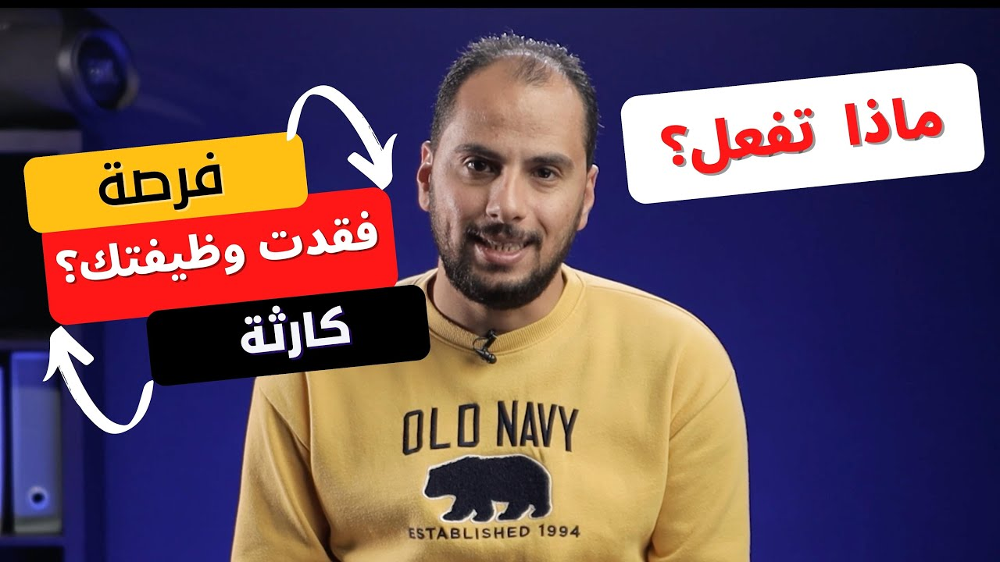

شغل ومستقبل
ماذا تفعل إذا فقدت وظيفتك؟ حول الازمة لفرصة
Elon Musk سرّح نص موظفين Twitter، وAmazon وFacebook سرّحوا عدد كبير جدًا. لو فقدت وظيفتك، فيه 3 خطوات أساسية تعملها الأول، وبعدها 3 حاجات مشتركة بين الناس اللي حوّلوا فقدان الوظيفة لنقطة تحوّل في حياتهم.

شغّل الحلقةElon Musk أول ما اشترى Twitter سرّح نص الموظفين.1 وAmazon وFacebook سرّحوا عدد كبير جدًا من الموظفين الفترة اللي فاتت، ودي شركات عالمية عملاقة اتأثرت بشكل كبير بالأزمة الاقتصادية.23 وعلى المستوى المحلي برضو، في بلادنا العربية، شركات كتير اتأثرت وبدأت تمشّي كتير من الموظفين. والأكتر من كده إن مع استمرار الأزمة، الموضوع هيزيد الفترة الجاية.
بس أنا مش جاي أحبطك وأخوّفك. بالعكس، أنا جاي أشارك معاك أفكار ممكن تحوّل الأزمة دي لنعمة أو نقطة تحوّل في حياتك. الكلام هنا جزئين: الأول فيه خطوات أساسية تعملها لو فقدت وظيفتك، عشان تتعامل مع الوضع وتقلل من أضراره وتلاقي وظيفة في أسرع وقت. والتاني، وده الأهم بالنسبالي، فيه كام فكرة هيخلّوك تحوّل كارثة فقدان الوظيفة لنعمة وفرصة جديدة.
تعمل إيه أول ما تفقد وظيفتك؟ 1:10
اللي بيفقد وظيفته بيعيش صراع ومشاعر متلخبطة جوّاه، ما بين القلق من المستقبل والتفكير في الالتزامات اللي عليه، وفيه دراسات بتقول إن فقدان الوظيفة بيزوّد خطر القلق، خصوصًا في الشهور الأولى.4 ودي مشاعر طبيعية لازم تمر بيها، لكن الاستمرار فيها مش هيفيد بحاجة، بالعكس هيعطّلك. المرحلة دي لازم تعدّيها في أسرع وقت ممكن، وعشان تعمل كده لازم تغيّر طريقة تفكيرك: بدل ما تقعد تفكر في إيه اللي ممكن يحصل لو ما اشتغلتش وتركّز على المشكلة، خلّي تركيزك على الحلول، وعلى اللي ممكن تعمله، والفرص اللي ممكن تكون متاحة قدامك. في المرحلة دي إنت محتاج تكون قوي من جوّه، مش مهزوم ومغلوب على أمرك.
تاني حاجة: اقعد مع نفسك وحط خطة لمصروفاتك الفترة الجاية، كنوع من أنواع التنظيم. اعرف معاك كام، وهيقعدوا معاك قد إيه، وإيه اللي ممكن تعمله عشان الفلوس دي تكفيك لأطول فترة ممكنة. وكمان فكّر في الأصول اللي عندك: تفكّها إمتى، وتفك إيه قبل إيه. لما ترتّب كل ده في دماغك هيكون أفضل من إنك تسيبها كده بظروفها، والتخطيط هيقلّل الضغط عليك وهيقلّل تهدير الوقت والفلوس.
الخطوة التالتة: حدّث الـCV بتاعك بالمهارات اللي اتعلمتها من شغلك القديم وخبراتك، وحط صورة جديدة، وبعدها فعّل مود البحث عن وظيفة في كل مكان. ابعت الـCV بتاعك كل يوم ومن غير زهق، ونزّل بوست على Facebook وLinkedIn وعلى أي platform إنت موجود فيها وليك فيها أصدقاء. وما تتكسفش إنك تعمل ده: فيه دراسات بتقول إن الناس بتعرف عن شغلها الجديد من دايرة معارفها أكتر من أي طريقة تانية.5
لحد هنا دول 3 نصايح أساسيين لازم تعملهم أول ما تسيب شغلك. لكنهم هيخلّوك لسه في مستوى العاطل اللي بيدور على شغل زي شغله القديم، أحسن شوية أو أقل شوية، مش أكتر. ومش هيأهّلوك للمستوى التاني: مستوى الناس اللي حوّلوا كارثة فقدان الوظيفة لنقطة تحوّل في حياتهم.
إزاي تحوّل كارثة فقدان الوظيفة لفرصة؟ 2:44
في الفترة اللي فاتت كنت مشغول شوية بالقراية عن ناس عملوا تحولات كبيرة في حياتهم، وكان فيه كتير منهم حصل لهم التحول ده بعد ما سابوا شغلهم. ولما ركّزت في الخطوات اللي خدوها، لقيت كام حاجة مشتركة ما بينهم.
أول حاجة عملوها تقريبًا كلهم: أعادوا اكتشاف نفسهم. واحدة منهم مثلًا كانت بتحب الكتابة من أيام الجامعة، وفي نفس الوقت كانت مهتمة بقطاع التكنولوجيا، فبدأت تكتب مقالات وتقارير عن شركات التكنولوجيا. ومن خلال دايرة معارفها بدأت توصل لمواقع ومجلات وتتعامل معاهم بالمقال، وكمّلت في المجال ده حتى بعد ما اشتغلت في وظيفة بدوام كامل، والوظيفة دي نفسها جت لها بسبب المقالات اللي كانت بتكتبها. هي أعادت اكتشاف نفسها في مجال ووظيفة مختلفين تمامًا عن شغلها من بعد ما اتخرّجت، وكان صعب يحصل ده طول ما هي مستقرة في شغلها القديم. عشان كده إنت كمان لازم تعيد اكتشاف نفسك، وتستغل إمكانياتك ومهاراتك وعلاقاتك، لأن بيهم ممكن تفتح لنفسك طريق مختلف تمامًا عن اللي كنت فيه قبل كده.
الحاجة المشتركة التانية: استغلوا الوقت في تطوير مهاراتهم. نقول مثلًا إن الفترة اللي ممكن تقعدها لحد ما تلاقي شغل جديد هتكون من 3 لـ6 شهور؛ تقدر تعمل فيها خطة تطوّر بيها مهارات بيحتاجها شغلك، من خلال كورسات offline أو online، ولو فيه شهادة ممكن تاخدها. وهنا هتستفيد بأكتر من حاجة: المهارات دي ممكن تسرّع توظيفك، وبتأهّلك لمستوى تاني من الشركات اللي ممكن تشتغل فيها، والأهم إنك مش هتكون ضيّعت الوقت على الفاضي من غير استفادة.
تجربة فقدان الوظيفة صعبة جدًا، ومرّ وبيمر بيها ناس كتير جدًا، لكن فيه ناس بتتعلم منها الدرس فعلًا وناس تانية لأ. ودي الحاجة المشتركة التالتة: اتعلموا الدرس وفهموا إن مفيش حاجة ثابتة ومضمونة، فبدأوا ينوّعوا مصادر دخلهم، عشان ما يكونوش معتمدين على وظيفة واحدة هي مصدر دخلهم الأساسي.
البنت اللي حكيت لك عنها استمرت في كتابة التقارير الصحفية جنب شغلها الأساسي. ولو إنت محاسب، ممكن تقدّم استشارات في المحاسبة online أو offline. وهكذا، أي حاجة بتفهم فيها أو ليها علاقة بمجال شغلك ممكن تقدّمها كخدمة أو كمجال عمل إضافي. وميزة العمل الإضافي إنه مش بس بيأمّن لك دخل جنب دخلك الأساسي؛ ده كمان بيفتح لك فرص تانية كتير من خلال دايرة العلاقات اللي إنت فيها.
تتغيّر ولا تسيب التغيير يعدّي عليك؟ 4:44
آخر حاجة عاوزك تعرفها: كل حاجة حوالينا بتتغير وبتتطور، ومفيش حاجة بتفضل ثابتة، و«دوام الحال من المحال» زي ما بيقولوا. وإنت مش قدامك غير اختيار من اتنين: يا تغيّر نفسك وتتطور مع التطوير، يا تسيب التغيير يعدّي عليك وتقعد تسب وتلعن في الظروف. لو اخترت الأول هتعرف تعمل نقلات كبيرة في حياتك، ولو اخترت التاني حالك هيبقى من الأسوأ للأسوأ.
الكوارث بتحصل لكل الناس، لكن التعامل معاها هو اللي بيفرّق شخص عن التاني. والخبر المفرح إن فيه كتير من الناس خرجوا من الكوارث دي بفرصة عمرهم.
فصول الحلقة
أسئلة شائعة
أول حاجة أعملها لو فقدت وظيفتي إيه؟
عدّي مرحلة القلق والمشاعر المتلخبطة في أسرع وقت ممكن، وغيّر طريقة تفكيرك: بدل ما تركّز على المشكلة، ركّز على الحلول والفرص اللي ممكن تكون متاحة قدامك.
إيه الـ3 نصايح الأساسية بعد ما أسيب شغلي؟
تغيّر طريقة تفكيرك وتركّز على الحلول، وتحط خطة لمصروفاتك وتعرف الفلوس اللي معاك هتقعد قد إيه، وتحدّث الـCV وتبعته كل يوم وتنزّل بوست على Facebook وLinkedIn.
أستغل فترة البحث عن شغل إزاي؟
اعمل خطة تطوّر فيها مهارات بيحتاجها شغلك من خلال كورسات offline أو online، ولو فيه شهادة ممكن تاخدها. المهارات دي ممكن تسرّع توظيفك وتأهّلك لمستوى تاني من الشركات.
ليه أنوّع مصادر دخلي؟
عشان مفيش حاجة ثابتة ومضمونة، فما تبقاش معتمد على وظيفة واحدة هي مصدر دخلك الأساسي. والعمل الإضافي مش بس بيأمّن لك دخل جنب دخلك الأساسي، ده كمان بيفتح لك فرص من خلال دايرة علاقاتك.
تصحيحات
- قلت إن فيه دراسة بتقول إن معظم الناس اللي بيلاقوا شغل جديد بيكون دايمًا من دايرة معارفهم؛ الدراسات اللي لقيتها بتقول إن دايرة المعارف هي أكتر طريقة الناس بتعرف منها عن شغل جديد، لكن مش دايمًا، ومش بالضرورة الأغلبية: في دراسة على 2553 موظف في حكومة Quebec النسبة كانت 42.7%، وفي دراسة على 1780 شخص في منطقة Philadelphia كانت حوالي 57% من اللي مش شغالين لحسابهم.56
المصادر
- euronews.com https://www.euronews.com/2022/11/04/twitter-temporarily-closes-offices-as-elon-musk-begins-mass-layoffs
- about.fb.com https://about.fb.com/news/2022/11/mark-zuckerberg-layoff-message-to-employees/
- nbcbayarea.com https://www.nbcbayarea.com/news/business/money-report/amazon-says-it-will-cut-over-18000-jobs-more-than-initially-planned/3120810/
- pmc.ncbi.nlm.nih.gov https://pmc.ncbi.nlm.nih.gov/articles/PMC9436725/
- 80000hours.org https://80000hours.org/2013/05/how-important-is-networking-for-career-success/
- doi.org https://doi.org/10.2307/202051